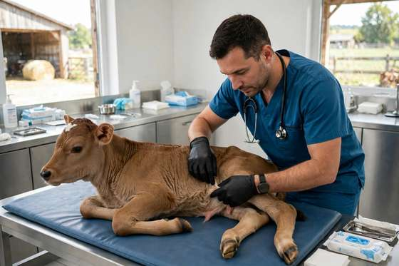

📚 Free PDF Guide · Surgical Management

A complete illustrated veterinary guide to castration in cattle, with indications, surgical technique, instruments, aftercare and prevention.
🆓 FREE — no login needed. View or download this PDF free, for everyone.
Important: all surgical procedures must be performed by a qualified veterinarian under proper anaesthesia and aseptic conditions.